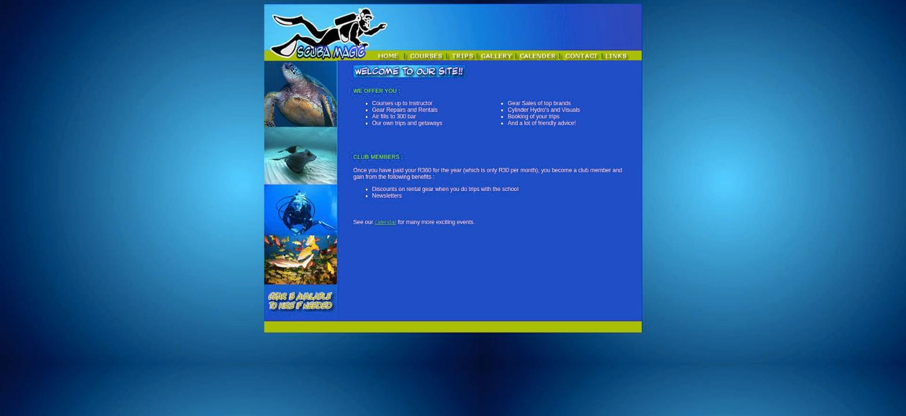

Scuba Magic — дайвинг-школа и магазин снаряжения в Родепорте, ЮАР. С января 2002 года, основатели Robin & Lyn Cooke.
Заменить устаревшую вёрстку и малоразмерные фото 150×138px
Дизайн, вёрстка, генерация фото, анимация счётчика цены
Острые углы, full-bleed фото, редкий алый акцент — паттерн Ferrari
Старые шрифты, случайная сетка фотографий, качество фото в оригинальной галерее не годилось для полноразмерного макета — только маленькие бледные превью без ссылки на оригинал.

Взял за референс паттерн дизайн-системы Ferrari — не бренд, а приёмы:
Пришлите ссылку на текущий сайт — отвечу с честной оценкой в течение дня.